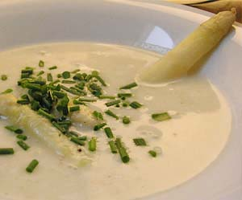

Spargelcremesuppe
5 von 6500 g weisser badischer spargel schälen und in kleine stücke schneiden, die spitzen jedoch am stück lassen. ca. 1 liter wasser mit salz und einer prise zucker versetzen und der spargel ca. 20 min kochen. in einer separaten pfanne etwas butter anziehen, eine kleine zwiebel und etwas mehl dazugeben. mit dem spargelwasser samt spargeln ablöschen und mit dem stabmixer pürieren. ca. 1 dl rahm beigeben und etwas einkochen. kurz vor dem servieren ein eiweiss darunterziehen und abschmecken. mit den spargelspitzen und schnittlauch garnieren.
